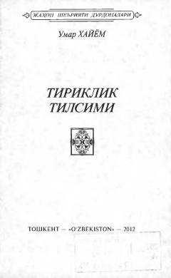

TTUmar Xayyomning falsafiy mazmunga boy ruboiylari to'plami.
Ushbu to'plam buyuk mutafakkir Umar Xayyomning falsafiy ruboiylarini o'z ichiga oladi. Asarlar Ergash Ochilov tomonidan an'anaviy aruz vaznida o'zbek tiliga tarjima qilingan bo'lib, hayot mazmuni va inson taqdiri haqidagi teran fikrlarni qamrab oladi.